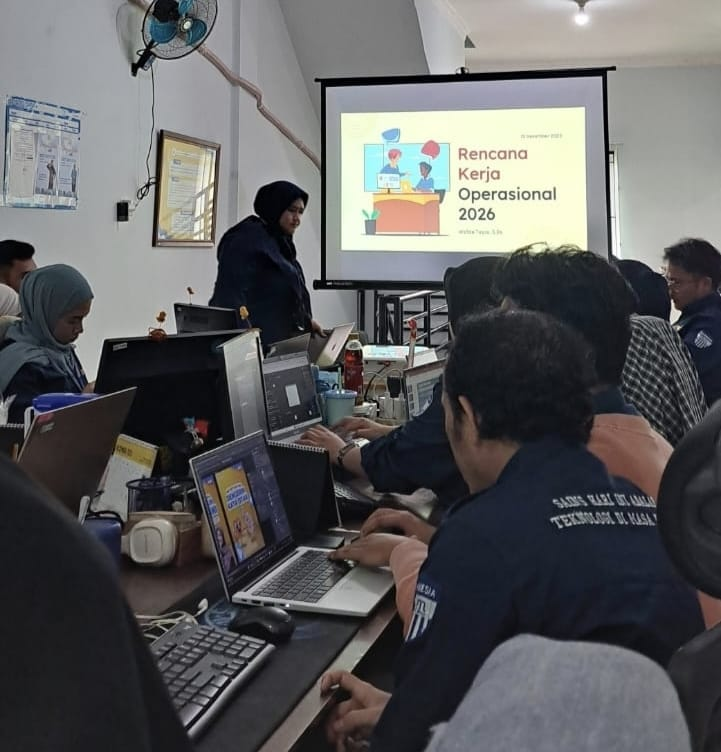

Kompetisi · 22 Februari 2026

PT Ketiara Aliran Rezeki melalui brand PUSKANAS menyelenggarakan Kompetisi Akademik Nasional yang diikuti ribuan siswa dari berbagai provinsi di Indonesia.
Kegiatan ini bertujuan mengasah kemampuan akademik siswa sekaligus membuka kesempatan berprestasi di tingkat nasional. Peserta mengikuti rangkaian babak penyisihan hingga final yang diselenggarakan secara daring dan luring.
PT KAR berterima kasih kepada seluruh sekolah dan peserta yang telah berpartisipasi, serta berkomitmen menghadirkan kompetisi serupa secara berkelanjutan.